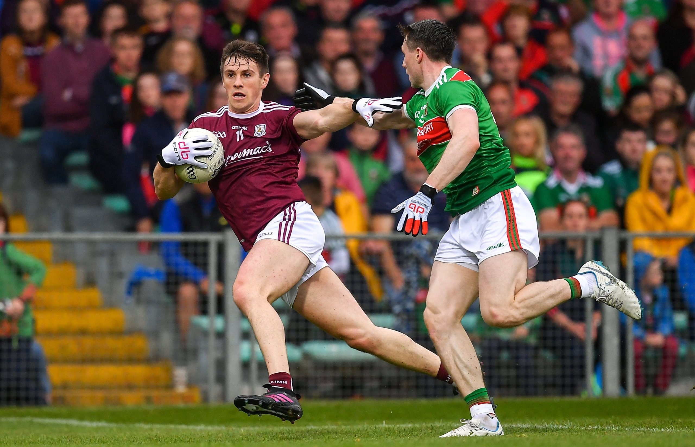

St. Gerald's College Gaelic Football
St. Gerald's College Gaelic FootballSt. Gerald’s DLS College is synonymous with Gaelic Football. The school has been successful across all grades winning numerous Connacht Leagues and Championships. In recent years, we have seen a surge in the number of St. Gerald’s DLS College students representing Mayo at various age levels, with a sizeable proportion moving to the senior ranks; Aidan O’Shea, Seamus O’Shea, Cillian O’Connor, Paddy Durcan, James Durcan and Robert Hennelly, to name but a few.
